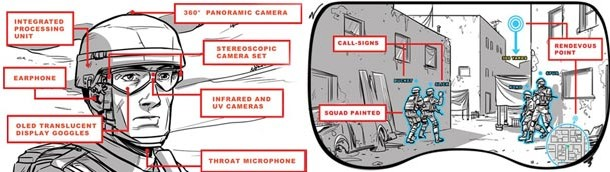
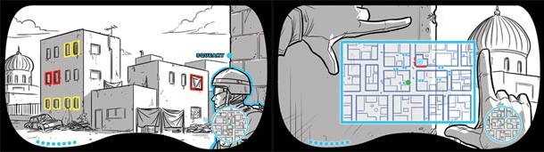
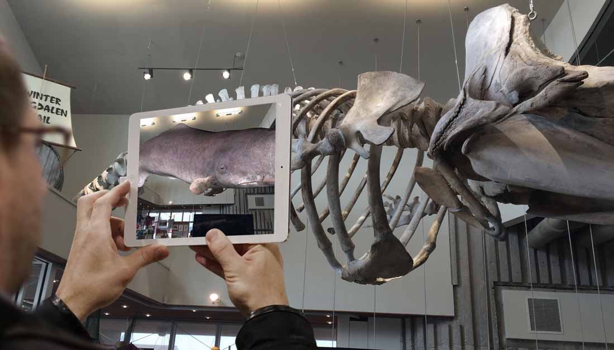

Pour particuliers
En effet la réalité augmentée est utilisée pour afficher des informations sur des lieux que l’utilisateurs cible.
La réalité augmentée est la superposition de la réalité et d'éléments calculés par un système informatique en temps réel.
En effet la réalité augmentée est utilisée pour afficher des informations sur des lieux que l’utilisateurs cible.
Depuis ces 2 dernières années, le jeu vidéo à pris la place numéro 1 dans le marchéde la réalitée augmentée. Exemple ici avec Pokemon GO, un jeu de Niantic.inc qui exploite les possibilités de l’AR
Le domaine militaire est toujours l’un des premier domaines a profiter des nouvelles technologies .
Comme les mécaniciens militaires doivent réparés des objets complexes rapidement, des entreprises ont créées des lunettes pour les aider. Ce dispositif reconnait les appareils défectueux et projette les informations et les actions à effectuer sur les écrans des lunettes. Ceci accélère les réparations et permets de libérer les mains du mécanicien puisqu’il n’a pas le guide à tenir.
|  |  |
Le domaine touristique a aussi permis un grand avancement dans la réalité augmentée. En effet, de nombreux sites et villes utilisent cette technologie pour attirer plus de clients.
L’application Imyana, qui offre une visite de bordeaux ludique via la réalité augmentée.
Ou encore dans le Musée de la Mer des Îles de la Madeleine qui proposent plusieurs utilisation de la réalité augmentée comme faire prendre vie au squelette d’un cachalot. 
La réalité augmentée est aussi utilisée dans le domaine marketing (c’est-à-dire dans des magasin par exemples). Cela a permis la création de une cabine d’essayage virtuelle par une entreprise russe.